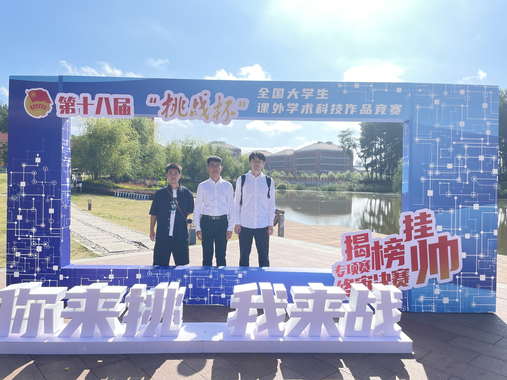
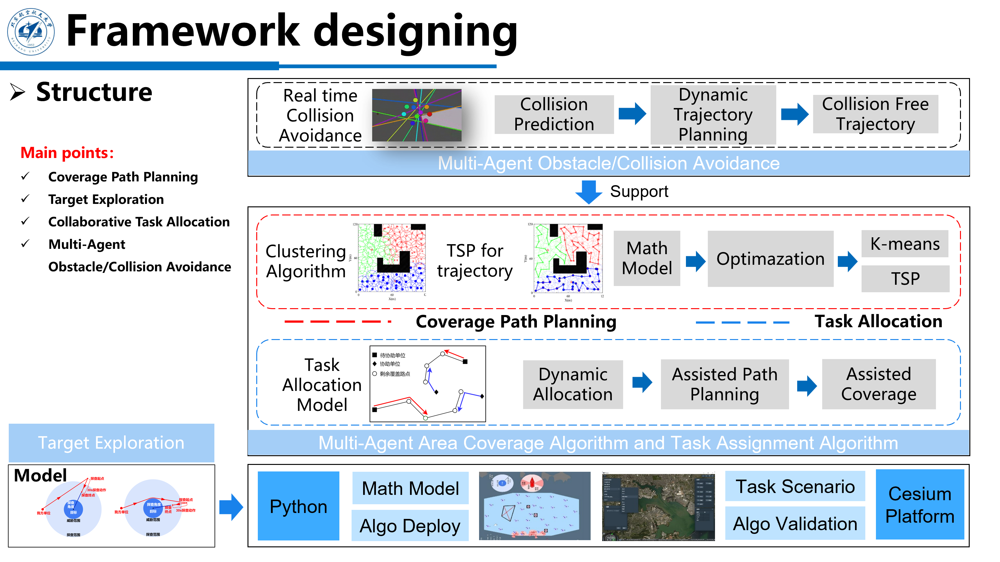
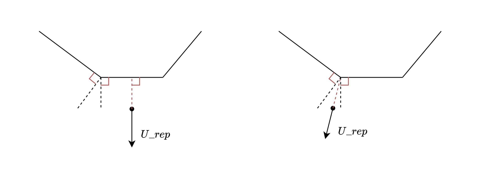
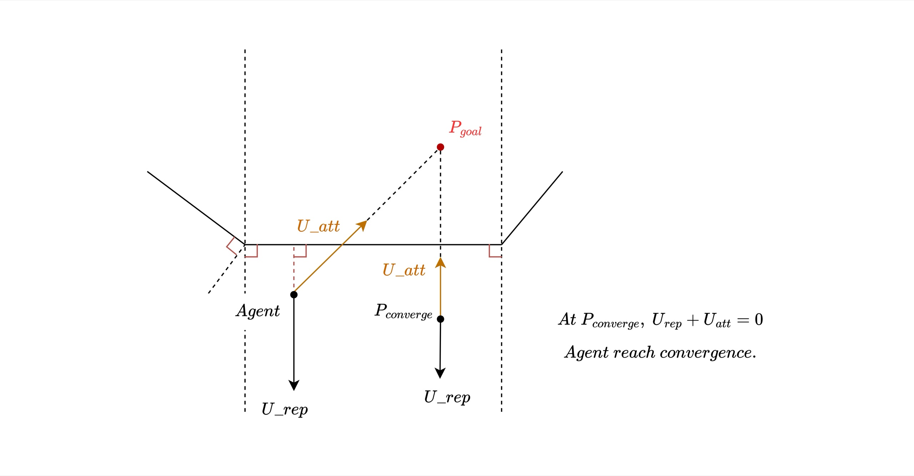
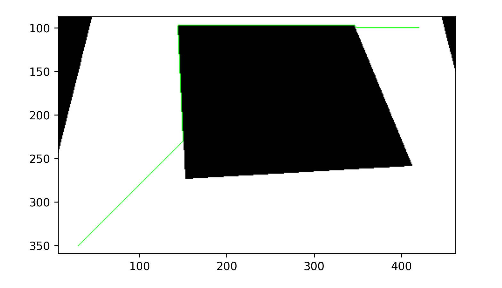
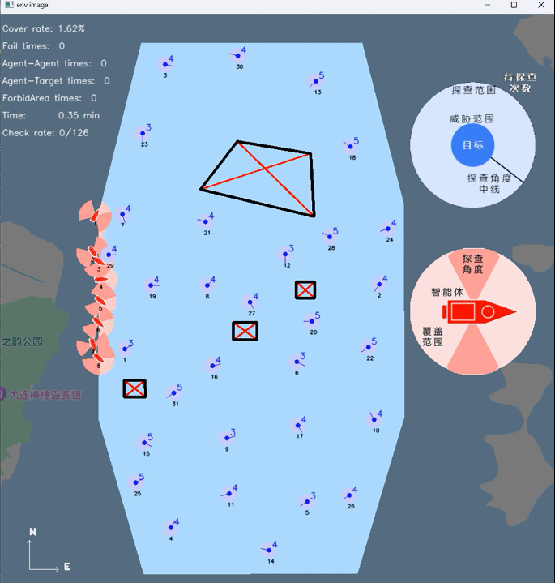
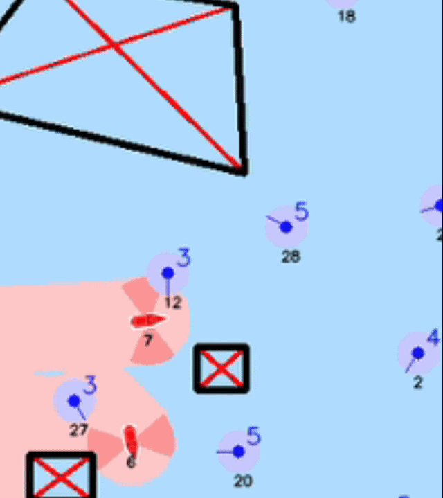

Challenge Cup (挑战杯)
Overview
The "Challenge Cup" (挑战杯) is China's premier science and technology competition for university students. The 2023 edition in Guizhou featured 21 topics and over 2,000 participating projects. Our team was awarded the Grand Prize (特等奖) — the highest honor in the competition.

Highlights
Problem & Requirements
This project addresses the challenge of information gathering in unmanned maritime areas by presenting a multi-agent decision control model for collision-free area coverage and target exploration within a convex polygonal region:
- Complete coverage of the entire area;
- For each target, perform multiple scans at fixed angles;
- Avoid restricted zones and prevent collisions between agents.
The final model was deployed to the organizer's simulation platform and validated using real ship dynamics. Results were evaluated on coverage ratio, collision avoidance failures, and total simulation time.
Team
Framework design, simulation environment, coverage path planning, multi-agent decision logic, OpenCV simulation, system integration.
Collaborative exploration & task allocation algorithms, system integration.
Artificial potential fields & A* obstacle avoidance, utility functions (convex hull, shortest distance, etc.).
Multi-agent collision avoidance based on RVO (Reciprocal Velocity Obstacles).
Built and debugged the cluster simulation platform — Potato.
Our Approach
Our algorithm consists of four algorithmic modules executing subtasks and a cluster simulation platform for validation:
- Obstacle avoidance / collision avoidance
- Area coverage trajectory planning
- Target exploration
- Dynamic task allocation
The simulation platform is built using Python, the OpenCV engine, and the Cesium engine.

System framework: four algorithmic modules + simulation platform.Obstacle Avoidance
Throughout the competition, our obstacle avoidance strategy evolved through three stages:
Stage 1 — Artificial Potential Fields
In the initial stage, agents only needed to avoid targets. We used the artificial potential field method with a second-order dynamics model and PID control. For each agent, the need_doa method determines whether obstacle avoidance is required:
def need_doa(self):
list_doa_agent = []
for i in range(self.num_agents):
for j in range(i + 1, self.num_agents):
if self.agents[i].check_collision_agent(self.agents[j]):
list_doa_agent.append([i, j])
list_doa_target = []
for i in range(self.num_agents):
for target_idx in range(self.num_targets):
distance = np.linalg.norm(
np.array([self.agents[i].position])
- np.array([self.targets[target_idx].coord])
)
if distance < self.obstacle_dist:
if self.list_doa_target_key[target_idx] == 0:
self.list_doa_target_key[target_idx] = 1
else:
list_doa_target.append([i, target_idx])
if len(list_doa_agent) > 0 or len(list_doa_target):
return True, list_doa_agent, list_doa_target
else:
return False, list_doa_agent, list_doa_targetThe resultant force of attraction (toward destination) and repulsion (from targets within 500m) determines the next waypoint. A constant repulsive force is applied within 50m to prevent excessive deflection.
Stage 2 — Avoiding Restricted Zones
When organizers introduced convex polygonal avoidance zones, we identified the closest point on the polygon to the agent and treated it as an obstacle:
def distance_point_to_line(point, line_start, line_end):
line_start = np.array(line_start)
line_end = np.array(line_end)
line_vec = line_end - line_start
point_vec = point - line_start
t = np.dot(point_vec, line_vec) / np.dot(line_vec, line_vec)
t = max(0, min(1, t))
closest_point = line_start + t * line_vec
distance = np.linalg.norm(point - closest_point)
return distance, closest_point
def shortest_distance_to_polygon(point, polygon_vertices):
min_distance = float('inf')
closest_point = None
for i in range(len(polygon_vertices)):
start_point = polygon_vertices[i]
end_point = polygon_vertices[(i + 1) % len(polygon_vertices)]
distance, closest = distance_point_to_line(point, start_point, end_point)
if distance < min_distance:
min_distance = distance
closest_point = closest
return min_distance, closest_point
Repulsive force calculation from the convex hull of the avoidance zone.However, a convergence point issue was discovered: when both the agent and target lie within the perpendicular region of an avoidance zone edge, the potential field fails.

Convergence point issue: the agent gets trapped when both positions fall within the perpendicular region.Stage 3 — A* Algorithm
To solve the convergence issue, we adopted the A* algorithm on the pre-gridified map for real-time collision-free path planning:
class AStarPathPlanner:
def __init__(self, grid_map):
self.grid_map = grid_map
self.rows = len(grid_map)
self.cols = len(grid_map[0])
def heuristic(self, current, goal):
return np.sqrt((current[0] - goal[0])**2 + (current[1] - goal[1])**2)
def find_path(self, start, end):
start = tuple(start)
end = tuple(end)
if start == end:
return [[start[0], start[1]]]
open_list = [(0, start)]
came_from = {}
g_score = {cell: float('inf') for row in self.grid_map for cell in row}
g_score[start] = 0
f_score = {cell: float('inf') for row in self.grid_map for cell in row}
f_score[start] = self.heuristic(start, end)
while open_list:
_, current = heapq.heappop(open_list)
if current == end:
path = [current]
while current in came_from:
current = came_from[current]
path.append(current)
path.reverse()
path_list = []
for tpl in path:
path_list.append([tpl[0], tpl[1]])
return path_list
add = [(0,1),(0,-1),(1,0),(-1,0),(1,1),(1,-1),(-1,1),(-1,-1)]
for dr, dc in add:
neighbor = (current[0] + dr, current[1] + dc)
if (0 <= neighbor[0] < self.rows and 0 <= neighbor[1] < self.cols
and self.grid_map[neighbor[0]][neighbor[1]] != 1):
tentative_g_score = g_score[current] + 1
if tentative_g_score < g_score.get(neighbor, float('inf')):
came_from[neighbor] = current
g_score[neighbor] = tentative_g_score
f_score[neighbor] = tentative_g_score + self.heuristic(neighbor, end)
heapq.heappush(open_list, (f_score[neighbor], neighbor))
return []
A* path planning result on the gridified map.Integrated Framework
The final need_doa logic checks whether the line segment between an agent's current position and its target intersects with any avoidance zone or target. If an intersection is detected, A* is used for avoidance zones and the artificial potential field for targets. The potential field is retained for its computational simplicity and to minimize code changes that could conflict with coverage and target-checking tasks.
Simulation Results
The following GIFs compare the algorithm performance before and after introducing online optimization:

Before optimization — agents wander without coordinationThe GIF below demonstrates the coverage path planning before adding the target exploration module:

Coverage path planning without target explorationFinal Video
The following video showcases our final simulation results in the organizer's system: